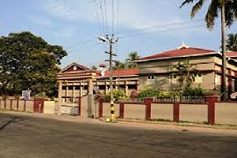
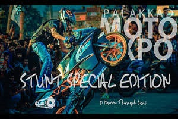
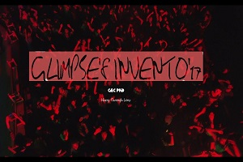
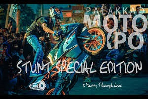
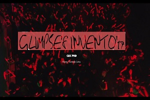
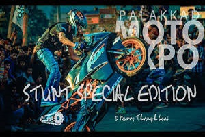
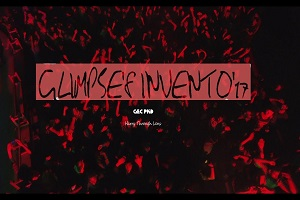

SCHOOLING...
" " " "
COLLEGE....
 " "
" "

" "
" "
Hai Friends,
I am Dhiya K K. An IT(Information Technology and Engineering) student in Government Engineering
College,Sreekrishnapuram,Palakkad.
Trying to persue a professional degree with much difficult.
To be honest,I believe that,life is too short for us to run behind something that is meaning less,we can
neither take with us something that we earned nor can stay back here to enjoy what we earned so,
trying the best out of you to gain the happiness you yearn for and to make the people around
you content is the foremost passion in my life.
1998 - was born in Pala
kkad,Kerala.
I early discovered my taste on exploring the untied knots of universe, the space of eternity that
mesmerises every human brain.Despite the knowledge that the study of space is called as Astronomy,
I just was curious on the extraordinaryphenomenon of the world.Later, was inclined towards an entirely differnt world, the virtual world of books.I still persue the dream to become the librarian of the Central library,Newyork(The largest library in the world).
2014 - completed SSLC , 2016 - Secondary Education.
My primary education and SSLC was completed in Kanikkamatha Convent E M G H S S, Palakkad. I went to Pandit Mothilal Govt.H.S.S,Palakkad for secondary education.At present, I am third yr btech student in GEC,Palakkad.School days were always the most cherishable time of one's life.After 12 yrs of education in a girls school, it was entirely different and difficult to get adjusted to higher secondary school.I believe that no other institution or organisation can bring, the moral values,social norms and the character that we build eventually in us other than our school.
" "
" "
